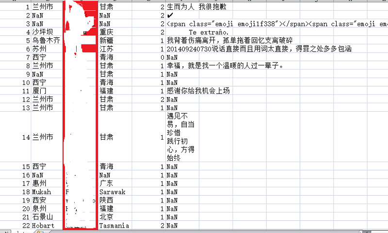

还未完成暂不开放，谢谢
这节我们用好友的签名生成一个词云吧
老规矩必不可少登录from wxpy import * import re #正则表达式 import jieba #分词所用的库 import matplotlib.pyplot as plt from wordcloud import WordCloud #生成词云 from pandas import DataFrame 写入csv所用 bot=Bot() my_friend=bot.friends()接下来提取好友签名，并利用正则表达式去掉span，class，emoji等的字段my_signatures = [] for i in friends[1:]: #第一个是自己，过滤掉自己的信息 signature = i.signature.strip().replace("span", "").replace("class", "").replace("emoji", "") rep = re.compile("[^\u4e00-\u9fa5^]") signature = rep.sub("", signature) my_signatures.append(signature) # 拼接字符串 text = "".join(my_signatures) # jieba分词 wordlist = jieba.cut(text, cut_all=True) result = " ".join(wordlist)那到这里我们已经将所有人的个性签名提取出来并且清洗了一遍，全部放入到‘result’字符串内了， 接下来就是靠这个字符串生成词云了。wordcloud = WordCloud(background_color="white",max_words=2000, max_font_size=1000, random_state=42, font_path='C:\Windows\Fonts\simsun.ttc').generate(result) wordcloud.to_file('output.jpg') plt.imshow(wordcloud) plt.axis("off") plt.show()
当我们扫描登录后就会这样显示出来。分析一下我的朋友们。看起来还不错，大家还是很乐观的。
首先我们要确认需要录入的字段。这里有昵称，性别，城市，身份，签名。
def get_var(User):
User_dict = {} #创建一个字典
User_dict["Name"] = User.name if User.name else "NaN"
User_dict["City"] = User.city if User.city else "NaN"
User_dict["Sex"] = User.sex if User.sex else 0
User_dict["Signature"] = User.signature if User.signature else "NaN"
User_dict["Province"] = User.province if User.province else "NaN"
return User_dict
friends_list = [get_var(i) for i in friends]
frame = DataFrame(friends_list)
frame.to_csv('data.csv', index=True, encoding='utf-8-sig')这样就可以将好友信息全部写入csv了。效果如下
到这里我们就剩下最后一节地理位置的分析了，趁热打铁完成最后一节吧。
代码在这里
还未完成暂不开放，谢谢

还未完成暂不开放，谢谢

还未完成暂不开放，谢谢
如果大家有什么建议或者建议请及时联系我我才能为大家做出更好的教程